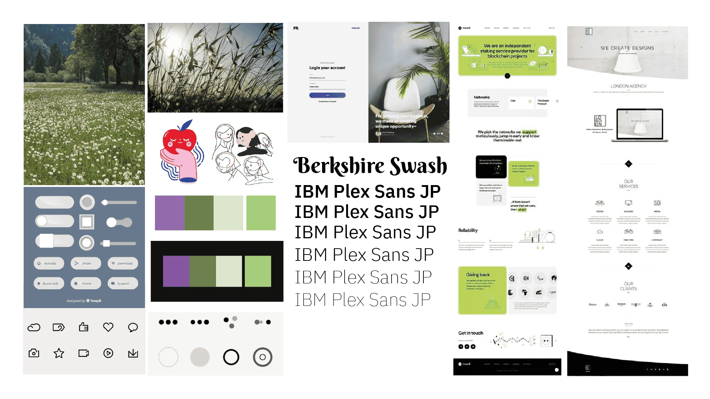

Sitio web
Valeriana Ecosalón
Diseño de sitio web para salón ecológico.
Descripción del proyecto
El proyecto consistió en el desarrollo de un sitio web autoadministrable para Valeriana Ecosalón, con el objetivo de aumentar su presencia en línea y mejorar la experiencia de sus clientes al acceder a información sobre sus servicios y productos.
Tiempo de desarrollo: 3 meses
Equipo: 4 personas
Rol que desempeñé:
- Investigación de usuario
- Arquitectura de información
- Diseño web
Investigación
Contexto
Para realizar el diseño del sitio web comenzamos con la etapa de investigación, donde recabamos información del entorno, analizamos las tendencias de diseño y buscamos las problemáticas que pudiera tener el Ecosalón con respecto a la gestión de sus clientes.
Por ello, uno de los primeros pasos que realizamos fue considerar a la competencia de Valeriana, por lo que evaluamos los diferentes sitios web relacionados a peluquerías y salones estéticos.
Análisis de entorno
Sumado a lo anterior, realizamos un análisis de entorno, consistiendo en revisar las prácticas que efectuaban distintas peluquerías y salones, además de revisar las tendencias futuras que podrían influir al ecosalón, enfocandonos en los siguientes 4 puntos:
Amenazas y oportunidades
Mediante el análisis FODA identificamos las fortalezas, oportunidades, debilidades y amenazas para el ecosalón.
Entre las áreas en las que destaca, detectamos lo siguiente:
- Única peluquería del sector que utiliza productos libres de químicos nocivos.
- Buena presencia online, con buen posicionamiento SEO.
Por otro lado, detectamos 2 áreas a mejorar:
- La zona en la que se encuentra el local está apartada del mall, por lo que resulta dificil para los potenciales clientes encontrarlos fácilmente.
- Falta de estandarización y atención solo por reserva de hora.
Usuario
Para realizar los arquetipos, nos centramos principalmente al público que frecuenta Ecosalón Valeriana, realizando encuestas y entrevistas, teniendo en común el estilo de vida con un enfoque en el cuidado personal o del entorno natural. A continuación se detallan los arquetipos detectados:
Arquetipo 1: Madre ecofriendly
Arquetipo 2: Activista introvertido

Arquetipo 3: Cosmetóloga Vegana

Hallazgos
Luego de realizar la investigación, procedemos a detectar los puntos con los cuales basaremos nuestro diseño, enfocandonos en solucionar los problemas que puedan presentar a los usuarios del Ecosalón.
- La ubicación del local les permite tener un espacio libre de ruidos, pero existe una dificultad para los potenciales clientes en encontrar el local debido a la poca visibilidad.
- Las personas desconocen el nombre o término "Ecosalón" y desinformadas acerca de los productos orgánicos.
- Orgánico no es sinónimo de seguro, se debe considerar las alergias de cada persona para utilizar un producto.
- Redes sociales pueden ser potenciadas, al ser utilizadas actualmente solo como vitrina de servicios.
Wireframes
Con la estructura definida, se elaboró una serie de wireframes, de los cuales seleccionamos uno a desarrollar como mockup.


Guia de estilo
Para elaborar una guía de estilo, creamos antes un moodboard, considerando los términos de cercano, atento y conciente, además de reflejar la temática natural del local.
Finalmente, definimos una guía de estilo, considerando la tipografía, colores y elementos dentro del sitio.
Mockups

Prototipo Interactivo
Tengamos contacto
Si tienes alguna duda de mi trabajo o algun proyecto, puedes contactarme en cualquiera de las redes sociales a continuación.
 kiara.inzunza@gmail.com
kiara.inzunza@gmail.com